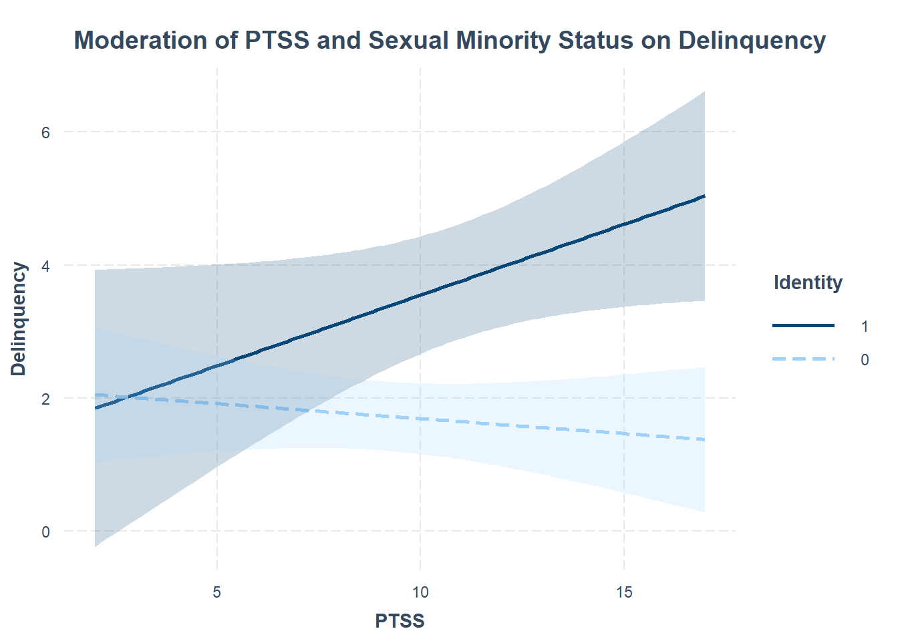

Sexual minority is binary coded as 0/1. This does not make for a nice plot, but the JN method does not accept factor variables. So, for plotting, you can convert sexmin to factor and use labels (i.e., “Sexual Minority” “Not a Sexual Minority”), otherwise skip it. Try it yourself to see what happens.
data$sexmin1 <-as.factor(data$sexmin)data$sexmin1 <-ifelse(data$sexmin1 ==1, "Sexual Minority", "Not a Sexual Minority")
The Linear Regression Model
# Fit moderation modelmod <-lm(delinq ~ ptss * sexmin, data = data)# Summary of modelsummary(mod)
Call:
lm(formula = delinq ~ ptss * sexmin, data = data)
Residuals:
Min 1Q Median 3Q Max
-4.8245 -1.7327 -0.7327 1.4922 11.4534
Coefficients:
Estimate Std. Error t value Pr(>|t|)
(Intercept) 2.13733 0.61912 3.452 0.000767 ***
ptss -0.04496 0.06167 -0.729 0.467336
sexmin -0.72060 1.39755 -0.516 0.607066
ptss:sexmin 0.25795 0.12457 2.071 0.040517 *
---
Signif. codes: 0 '***' 0.001 '**' 0.01 '*' 0.05 '.' 0.1 ' ' 1
Residual standard error: 2.511 on 121 degrees of freedom
(1 observation deleted due to missingness)
Multiple R-squared: 0.1406, Adjusted R-squared: 0.1193
F-statistic: 6.599 on 3 and 121 DF, p-value: 0.0003623
Warning: 'xfun::attr()' is deprecated.
Use 'xfun::attr2()' instead.
See help("Deprecated")
Warning: 'xfun::attr()' is deprecated.
Use 'xfun::attr2()' instead.
See help("Deprecated")
Table 1. Regression Coefficients
Predictor
Estimate
Std..Error
t.value
p.value
Significance
Intercept
2.137
0.619
3.452
0.001
***
PTSS
-0.045
0.062
-0.729
0.467
Sexual Minority (vs. non-minority)
-0.721
1.398
-0.516
0.607
PTSS × Sexual Minority
0.258
0.125
2.071
0.041
*
This should look familiar. The model predicts delinquent behavior using PTSS, sexual minority status, and their interaction as predictors.
REVIEW:
Intercept (2.14): This is the expected value of the outcome when PTSS = 0 and the individual is not a sexual minority.
PTSS (-0.045): Among non-sexual minority individuals, PTSS is not significantly associated with the outcome (p = 0.467).
Sexual Minority main effect (-0.721): Among individuals with PTSS = 0, being a sexual minority is not significantly associated with the outcome (p = 0.607).
PTSS × Sexual Minority interaction (0.258): This term is statistically significant (p = 0.041), indicating that the association between PTSS and the outcome differs by sexual minority status. Specifically, PTSS has a stronger positive effect on the outcome for sexual minority individuals.
Reminder: All model assumptions (?) must be met, unfortunately.
# Visualize interaction effectinteract_plot(mod,pred = ptss,modx = sexmin,plot.points = F,interval =TRUE,int.width =0.95,main.title ="Moderation of PTSS and Sexual Minority Status on Delinquency",legend.main ="Identity",x.label ="PTSS",y.label ="Delinquency")

Interpretation
This plot shows how post-traumatic stress symptoms (PTSS) predict delinquency, and how this relationship differs by sexual minority status.
Solid Line (sexmin = 1) → Sexual minority individuals
The slope is positive, indicating that as PTSS increases, delinquency increases for sexual minority youth.
This relationship is statistically significant. Note that you can assess significance from the plot because the confidence band (shaded area) does not cross zero
Dashed Line (sexmin = 0) → Non-sexual minority individuals
The slope is slightly negative, mostly flat, suggesting that PTSS is not associated with delinquency in this group.
Interaction effect: The effect of PTSS on delinquency depends on sexual minority status. More PTSS = More delinquency for sexual minority youth, more PTSS has no effect for youth who do not identify as a sexual minority.
# Johnson-Neyman techniquejohnson_neyman(mod, pred = sexmin, modx = ptss)
JOHNSON-NEYMAN INTERVAL
When ptss is OUTSIDE the interval [-164.38, 7.60], the slope of sexmin is p
< .05.
Note: The range of observed values of ptss is [2.00, 17.00]
Interpretation of the Johnson-Neyman Plot (J-N)
This J-N plot shows how the effect of sexual minority status on delinquency changes depending on the level of PTSS.
Key Interpretation: - The red shade shows where the effect of sexual minority status on delinquency is not statistically significant (p > .05). - The blue shade shows where the effect *is** statistically significant (p < .05). - The dashed vertical line marks the (J-N — the *threshold of PTSS** where the effect of sexmin becomes significant. - The black horizontal bar along the x-axis shows the *observed range of PTSS in the data**.
Regions of significance
For individuals with PTSS scores below ~8, the difference in delinquency between sexual minority and non-minority youth is not statistically significant. However, when PTSS exceeds ~8, sexual minority youth show significantly higher delinquency compared to their peers.
Link to policy and practice
I have several published articles using this type of methodology. In one article Barboza-Salerno & Remillard (2023) we examined the impact of future orientation in buffering the effect of early child adversity on delinquent behavior. Read it, you should be able to write the paper now.
Barboza-Salerno, G. E., & Remillard, A. (2023). Early child adversity and delinquent behavior in foster care youth: Do future expectations and sexual identity moderate the mediating role of posttraumatic stress? Journal of Child & Adolescent Trauma, 16(4), 945–957.